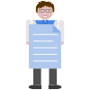

Summary
I'm a scientist researching how our mind understands and produces language. In particular I'm interested in the neural networks involved in phonetic perception and production.
My background is in clinical diagnostics, comparative medicine, and behavioural research.
Currently I'm investigating the role of animation in language acquisition.
Journey
Choices
So many options where do I begin?
Medical Assistant
Learned triage, patient intake, immunization, medication administration, and phlebotomy.
Hospitals & Clinics
Worked alongside physicians, nurses, and directly with patients.
Specimens
How are these tested? How do they tell us about diseases and ailments?
Clinical Diagnostic Laboratories
Worked with clinical laboratory scientists. Learned about specimen types, analysis, test preparation, and result reporting.
Clinical Trials
Big scary book talks about clinical trials. How are these conducted?
Comparative Medicine
Worked at research and pharmaceutical labs. Learned about animal models, pre-clinical, and clinical trials.
Science
I want to do original research!
University
Went to uni, double majored, joined academic research labs in Psychology, Cognitive Science, Linguistics, and Computer Science. Earned a B.A. in Linguistics and a B.S. in Cognitive Science.
Data Analyst
Worked in applied linguistics lab coding, performing exploratory analysis, inferential analysis, and data visualization.
Co-Author
FAQs

Did you always know what you wanted to do?
Not at all. I knew this much. I wanted to do something where my efforts had a positive impact on people. Aside from that I pretty much let my interests and curiosity lead the way.

Why did you become a medical assistant?
Being a medical assistant gave me a front row seat to the medical field by putting me right in the middle of all the action. I worked directly with patients, nurses, and doctors. I got to see how they all worked together and how each worked individually. This unique position allowed me the exposure to ask them questions and figure out which role I wanted to pursue further.
So being a medical assistant openned up many doors for you.
Absolutely. It gave me the opportunity to work in small clinics, large hospitals, medical billing, even outpatient psychiatry. As a matter of fact, it was my curiosity about blood samples and my training in phlebotomy that led me to clinical diagnostics.
How did you transition into clinical diagnostics?
I simply asked the lab tech how do I learn more about what they do. He gave me a huge book listing all the tests his lab ran. I studied the book and called the number in the back looking to join their lab. Personally I felt like it was a natural transition for me to go from providing medical care to figuring out the diseases and conditions that lead to the treatments.
Then you moved on to comparative medicine.
That's correct. And that was due to another big book, the physicians desk reference. I learned loads about therapeutic drug monitoring, hematology, cytology, normal ranges, and indicators of disease while in the clinical diagnostic labs. But the book talked about clinical trials, which are the test phases for new treatments. It was in the comparative medicine labs where I learned about the various phases of small animal research that leads to human clinical trials.
What made you decide to go back to school?
Actually, I was always in school. Regardless of what full time job I had I made sure to be taking at least one course at a local 2 year college. I took biology, chemistry, maths, physics, and anything else that seemed interesting like foreign languages and illustration. Taking these classes and listening to my friends helped me decide what courses to take at uni.
Was being at a university tough?
Uni was great! I learned so much. Not just from textbooks but from the experiences. I laughed and cried with professors over their life stories. I bonded with classmates over difficult classes. Formed friendships with people with greatly different and unique backgrounds. At times I was a bit overwhelmed. I went to a research university to do research. So I joined research labs, conducted independent study, joined research focused clubs and I was a double major. I made use of project management tools to manage my time. I went to the gym and thanks to a friend I met there he introduced me to anime. I learned that it is ok to step back, sit down, and be silly. So yes at times it can be tough, but it's manageable and so worth it. Did I mention that it was fun? It was fun.